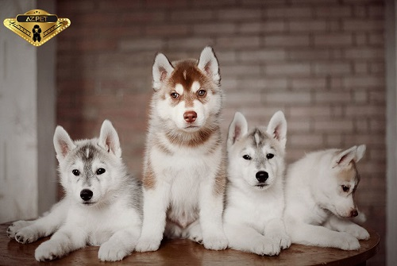

Chó Husky Sibir là loài chó có tầm ảnh hưởng “toàn cầu”. Chúng luôn dành được sự quan tâm đặc biệt của những người đam mê chó cảnh và tạo cảm hứng cho rất nhiều nghệ sĩ. Là giống chó kéo xe thuộc dòng Spitz, có nguồn gốc từ Đông Bắc Sibir, Nga. Loài chó này được người Chukchi Đông Bắc Á phối giống, cho ra giống chó có khả năng kéo xe đường dài tốt trong điều kiện vô cùng khắc nghiệt.
Về sau Husky được đưa tới Alaska, rồi trở nên phổ biến tại Hoa Kỳ và Canada. Nhờ ngoại hình thu hút và tính cách độc đáo mà Husky dần trở thành thú nuôi được ưa chuộng trong nhiều gia đình trên thế giới..
Back